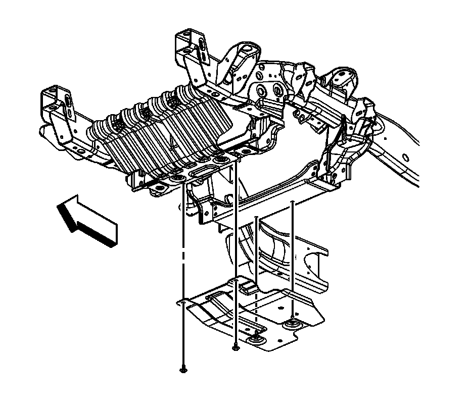

Oil Pan Skid Plate Replacement
Oil Pan Skid Plate Replacement
Removal Procedure
Important: The following service procedure is for 1500 series vehicles with RPO Code NZZ.

1. Raise and support the vehicle. Refer to Lifting and Jacking the Vehicle .
2. Remove the mounting bolts for the oil pan skid plate.
3. Remove the oil pan skid plate.
Important: The following service procedure is for 2500/3500 series vehicles with RPO Code NZZ.

4. Remove the mounting bolts for the oil pan skid plate.
5. Remove the oil pan skid plate.
Installation Procedure
Important: The following service procedure is for 1500 series vehicles with RPO Code NZZ.
1. Position the oil skid plate on the frame.
2. Install the oil skid plate mounting bolts.
Notice: Refer to Fastener Notice .
Tighten the bolts to 25 N.m (18 lb ft).
Important: The following service procedure is for 2500/3500 series vehicles with RPO Code NZZ.
3. Position the oil pan skid plate on the frame.
4. Install the oil skid plate mounting bolts.
Notice: Refer to Fastener Notice .
Tighten the bolts to 28 N.m (21 lb ft).
5. Lower the vehicle.